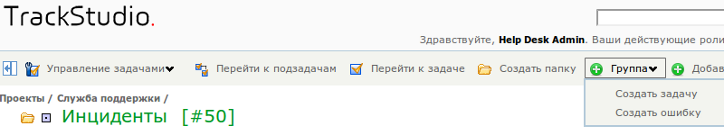

Как поместить кнопку создания задачи на верхнюю панель
Поля: Действие, Показывать на панели
Для того, чтобы кнопка создания задачи с этой категорией появилась на панели, нужно отметить опцию "Показывать на панели". Текст на кнопке задается полем "Действие". Например, для ошибок можно сделать кнопку "Создать bug", а можно "Зарегистрировать ошибку". Если не указать значение поля "Действие", текст на кнопке для этой категории будет состоять из слова "Создать" и названия категории. Если не отметить опцию "Показывать на панели", кнопка создания задачи будет располагаться не на панели, а в меню "Добавить другое".
Предусмотрена также возможность группировать кнопки создания задач. Группа задается также в поле "Действие" с помощью прямого слеша (/). Например "Группа/Создать задачу", "Группа/Создать ошибку".

Настройки отображения
Как сменить иконку для задачи
При редактировании свойств категории вы можете выбрать иконку, с которой задачи этой категории будут отображаться в списках задач, дополнительных полях типа "Задача", в дереве задач слева от основного экрана и тому подобных местах.
Вы можете использовать свой собственный набор иконок. Для этого поместите графические файлы с иконками (лучше всего использовать форматы PNG и GIF с прозрачной основой) в папку etc/plugins/icons/categories. Останавливать или перезапускать сервер TrackStudio для этого не требуется.
Также рядом с иконкой категории показывается иконка состояния задачи:
• соответствует начальному состоянию задачи
соответствует начальному состоянию задачи
• соответствует промежуточному состоянию задачи
соответствует промежуточному состоянию задачи
• соответствует конечному состоянию задачи
соответствует конечному состоянию задачи
Цвет фона под этой иконкой задается в настройках состояний задачи (в Процессах).
Как задать формат для учета времени
Обычный формат времени, используемый в TrackStudio для учета потраченного времени и ограничения бюджетов, это часы, минуты и секунды. Например, 6 часов 8 минут 10 секунд. Но такой формат времени неудобен для крупных сущностей, например, проектов или версий.
В TrackStudio вы можете задать свой формат времени для каждой категории задач в отдельности. Причем, если задача этой категории содержит подзадачи с другими категориями и другим форматом времени, потраченное время будет автоматически пересчитываться в нужный формат при выводе.
Вы можете задать ввод и вывод потраченного времени и бюджетов в годах, месяцах, неделях, днях, часах, минутах и секундах. При этом вы можете использовать любые комбинации этих единиц.
В файле настроек trackstudio.properties (trackstudio.default.properties) вы можете задать параметры пересчета одних единиц в другие.
trackstudio.hoursInDay 8
trackstudio.daysInWeek 5
trackstudio.daysInMonth 22
trackstudio.hoursInYear 2000
trackstudio.monthsInYear 12
Эти параметры задаются глобально для всего экземпляра TrackStudio.
Переход к задаче
Вы можете настроить страницу, которая будет показываться при переходе на задачу по ссылке из списка задач или по ссылке из дополнительного поля.
Для того, чтобы при переходе показывался список подзадач выбранной задачи, укажите "Перейти на страницу со списком задач", чтобы показывалась страница со свойствами задачи — "Перейти на страницу просмотра задачи".
Настройка внешнего вида задачи
Задачи в TrackStudio можно рассматривать как документы и как контейнеры для файлов. Вы можете указать, как именно отображать страницу со свойствами задачи:
1.Задача
2.Документ
3.Контейнер файлов
Настройка отображения в дереве задач
Для каждой категории задач вы можете управлять отображением в дереве задач. Например, вы можете скрыть "закрытые" (то есть находящиеся в финальном состоянии) задачи из дерева. Также вы можете указать порядок сортировки задач в дереве: алфавитный или в порядке обновления.
Управление поведением задачи
Вы можете указать для задач определенной категории, можно ли в них будет указывать роли пользователей в качестве ответственного. Таким образом можно назначить какую-то задачу на "Разработчиков", например. Также вы можете потребовать обязательного указания ответственного для задачи.
Интеграция с Google Calendar
Для того, чтобы задача определенной категории отображалась в Google Calendar, отметьте опцию "Создать событие в Календаре Google".